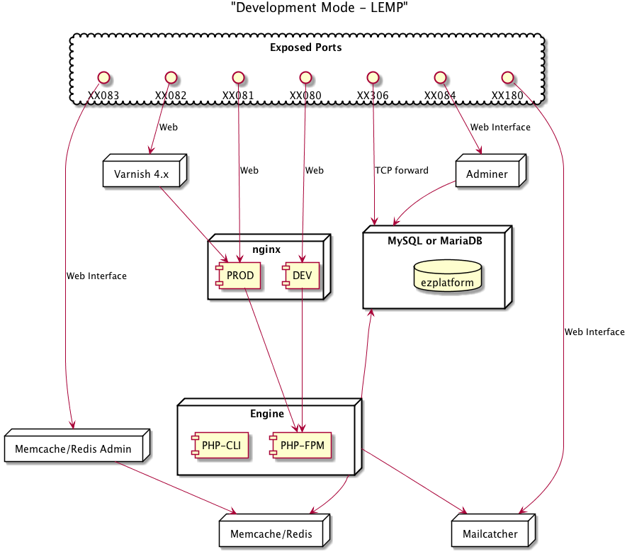
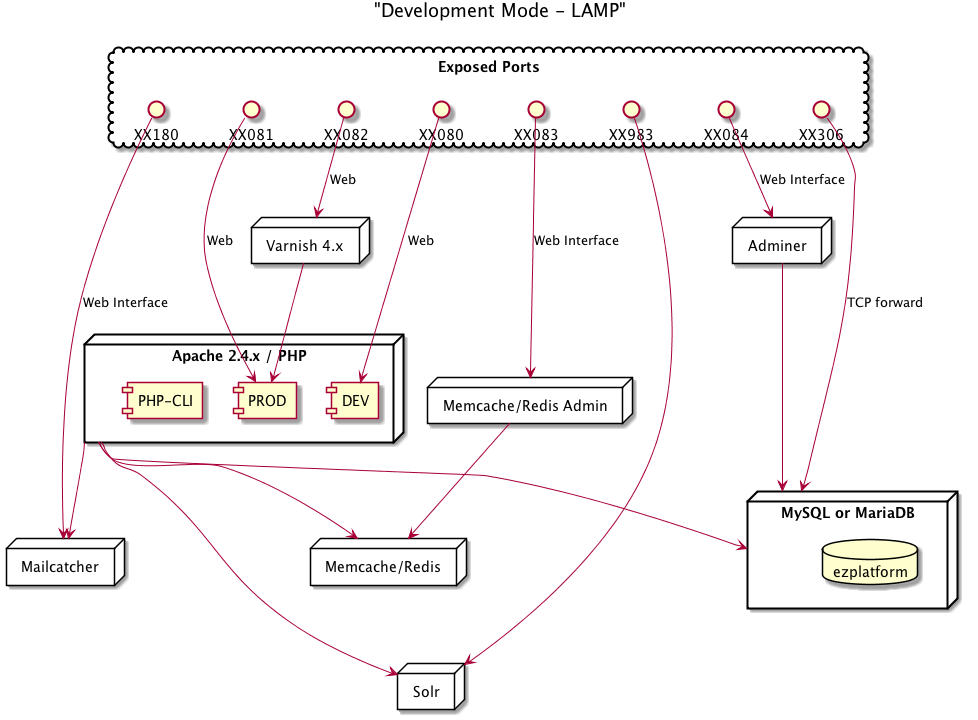

eZ Launchpad
Un outils qui va vous aider à construire un projet eZ Platform avec Docker en moins de 5 minutes.
Vous aurez une stack Docker complète avec le code source sur l'hôte prêt à développer directement !
Demonstration
Voici une démonstration de l'utilisation de l'initialization d'un projet en ne partant de rien. Cela va installer tout la stack pour vous, et vous permettre de code, commit et pusher!
Installation
Si vous avez curl d'installé:
$ curl -LSs https://ezsystems.github.io/launchpad/install_curl.bash | bash
Si vous avez wget d'installé:
$ wget -O - "https://ezsystems.github.io/launchpad/install_wget.bash" | bash
Utilisation
Quand vous avez installé eZ Launchpad (~/ez), vous pouvez profiter des fonctionnalités.
eZ Launchpad fourni 2 fonctionnalités principales:
- Initialisation d'un tout nouveau projet sur Docker
- Creation de la stack Docker d'un projet existant.
Initialisation
C'est l'installation en partant de zéro. Vous devez utiliser cela quand vous n'avez pas encore de projet, que vous voulez installer eZ Platform.
$ ~/ez init
eZ Launchpad va vous accompagner dans la création avec quelques questions.
Les utilisateurs de Mac OS X auront des questions spéciales pour installer D4M.
A la fin de la procédure, cette étape auront été fait pour vous:
- Configuration locale du projet.
- Téléchargement(pull) des bonnes images Docker sur votre local démon Docker.
- Installer un docker-compose.yml adapté pour eZ.
- Créer et démarrer les containers requis.(En fonction des choix effectués)
- Installation de Composer dans le container Engine.(la où PHP est éxécuté sur la stack)
- Installation d'eZ Platform avec Composer dans la stack.
Une fois l'initialisation terminée, le projet est prêt, vous pouvez vérifier en faisant:
$ ~/ez ps
Vous êtes désormais prêt a exporter la base de données et le storage, commiter and publier votre projet vers votre équipe.
$ ~/ez dumpdata; git init; git add .; git commit -m "First Initial Commit"
$ git remote add origin https://gitorigin.com/xxx/xxxx-xxx.git; git push -u origin master
eZ Platform Enterprise
Si vous voulez utiliser la version entreprise ou une version non stable vous avez le choix! Regardez l'aide. Voici un exemple:
$ ~/ez init ezsystems/ezplatform-ee v1.9.0-rc1
Quand eZ Launchpad vous demander les autorisations HTTP-BASIC alors il vous faudra fournir la clef d'installation et le jeton.
Creation
Dans ce context vous avez déjà un projet quelque part, quelqu'un a déjà fait un ~/ez init
Donc vous avez probablement déjà fait
$ git clone https://SOMETHING.git
Si vous voulez savoir si votre projet est prêt pour eZ Launchpad vous pouvez vérifier l'existence de .ezlaunchpad.yml à la racine du projet.
Pour créeer la stack locale la commande est alors
$ ~/ez create
eZ Launchpad va juste télécharger les images, créer les containers puis importer la base et le storage.
Déploiement
eZ Launchpad peut également vous aider à deployer. Même si c'est optionnel et que vous pouvez déployer comme bon vous semble, nous voulions vous simplifier la tâche.
Configuration
Platform.sh est une PaaS (Platform as a Service)
Avec Platform.sh il n'y a pas vraiment de processus de déploiement manuel. Platform.sh va simplement créer et synchroniser les environments selon le repository git!
eZ Launchpad va vous permettre de configurer le projet pour fonctionner avec Platform.sh.
$ ~/ez platformsh:setup
Cette commande va créer et générer les fichiers requis par Platform.sh. Comme eZ Launchpad connait votre projet et vos services il va adapter les fichiers de configuration Platform.sh
Voici la liste des fichier qui vont être créés.
.platform/services.yaml
.platform/routes.yaml
.platform.app.yaml
ezplatform/app/config/env/platformsh.phpVous aurez besoin d'initialiser la base de données et le storage sur Platform.sh (la première fois), eZ Launchpad va donc aussi créer un dump.
Deploiement
Comment déjà mentionné, il n'y a pas vraiment de processus de déploiement, cette command va juste afficher de la documentation.
$ ~/ez platformsh:deploy
Bientôt disponible...
Stack
N'importe quand vous pouvez avoir de l'information sur votre stack
$ ~/ez info
Selon l'initialisation éffectuée vous aurez plus ou moins de service disponible. Voici par défaut.
LEMP: Linux Nginx Mysql/MariaDB PHP-FPM
LAMP: Linux Apache Mysql/MariaDB PHP(mod_php)
Commandes
eZ Launchpad est fait pour vous aider avec Docker.
Pour le faire, vouci les commandes disponibles:
$ ~/ez
Usage:
command [options] [arguments]
Available commands:
help Displays help for a command
list Lists commands
rollback Rollback an update.
self-update Self Update
docker
docker:build [build] Build all the services (or just one).
docker:clean [docker:down|clean|down] Clean all the services.
docker:comprun [comprun] Run Composer command in the engine.
docker:create [create] Create all the services.
docker:dumpdata [dumpdata] Dump Database and Storage.
docker:enter [enter|docker:exec|exec] Enter in a container.
docker:importdata [importdata] Import Database and Storage.
docker:initialize [docker:init|initialize|init] Initialize the project and all the services.
docker:logs [logs|log] Display the logs.
docker:sfrun [sfrun] Run a Symfony command in the engine.
docker:start [start] Start all the services (or just one).
docker:status [docker:ps|docker:info|ps|info] Obtaining the project information.
docker:stop [stop] Stop all the services (or just one).
docker:up [up] Up all the services (or just one).
platformsh
platformsh:deploy [psh:deploy] Deploy with Platformsh integration.
platformsh:setup [psh:setup] Set up the Platformsh integration.
Configurations globales
Parce que vous voulez pouvoir partager certaines configurations entre vos projets. eZ Launchpad lit un fichier de configuration dans votre HOME.
Ce fichier de configuration est ~/ezlaunchpad/ez.yml. Voici un exemple:
docker:
host_machine_mapping: "/Users/bob/MyProjects:/data/MYPROJECTS"
host_composer_cache_dir: "/data/MYPROJECTS/.composer_cache"
provisioning:
folder_name: "myprovisioningfoldername"
composer:
http_basic:
hostname:
host: www.hostname.com
login: login
password: pass
token:
github:
host: github.com
value: tokenvalueNotez que la configuarion est globale et ne sera pas incluse dans le projet. (i.e dans le repository de source). Mais elle sera utilisé dans votre stack Docker locale.
La section docker est décrite dans la prochaine section.
Mac OS X optimisations avec D4M
Pour partager des répertoires entre l'hôte(votre Mac) vers les containers Docker for Mac est très lent.(au moins pour le moment). Donc pour contourner ce problème de performance, il y a une technique.
Cette technique s'appelle D4M. Sans trop rentrer dans les détails, D4M utilise la MobbyVM qui fait touner le démon Docker du Mac et monte les répertoires via NFS.
Note: C'est étrange en effet, mais oui NFS est bien plus rapide que le montage par défaut!
Vous avez deux manières de configurer D4M:
- de manière transparente: alors il n'y a pas de configuration spéciale pour eZ Launchpad
- en limitant le répertoire exporté: Dans ce cas vous devez avertir eZ Launchpad
Si vous n'etes pas en mode transparent, disons que vous avez exporté
# /etc/exports
/Users/bob/MyProjects -mapall=bob:staff localhost
Et donc vous avez monté ce répertoire dans /data/MYPROJECTS de la MobyVM (through D4M). Alors vous devez ajouter cette configuration pour eZ Launchpad
# ~/.ezlaunchpad/ez.yml
docker:
host_machine_mapping: "/Users/bob/MyProjects:/data/MYPROJECTS"
host_composer_cache_dir: "/data/MYPROJECTS/.composer_cache"
host_composer_cache_dir permettra lui de partager le cache Composer entre vos projets.